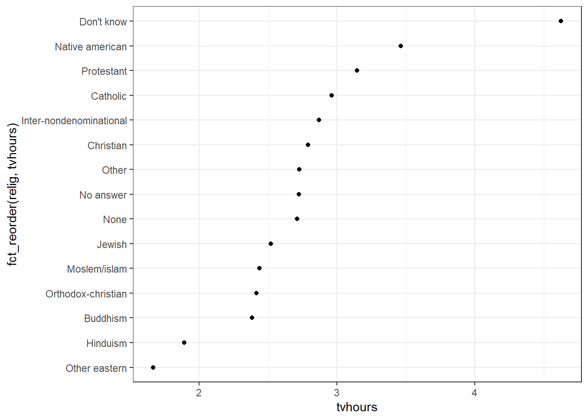

Chapter 7 ggplot2
7.1 Parametric Rendering
7.1.1 Grammar
ggplot2 implements the idea of a “grammar of graphics.” The grammar implemented by ggplot2 could be summarized as follows:
- plot ::= coord scale+ facet? layer+
- layer ::= data mapping stat geom position?
A plot is defined by a coordinate system (coord), one or more scales (scale), an optional faceting specification (facet), and one or more layers (layer). A layer is defined as an R data frame (data), a specification mapping columns of that frame into aesthetic properties (mapping), a statistical approach to summarize the rows of that frame (stat), a geometric object to visually represent that summary (geom), and an optional position adjustment to move overlapping geometric objects out of their way (position).
7.1.2 coord
- coord_cartesian - (default) cartesian coordinate system (x horizontal from left to right, y vertical from bottom to top)
- coord_flip - flipped cartesian coordinate system (x vertical from bottom to top, y horizontal from left to right)
- coord_trans
- coord_equal
- coord_polar - polar coordinate system; the x (or y) scale is mapped to the angle (theta)
- coord_map - various map projections
7.1.3 facet
- facet_wrap(~cell) - univariate: create a 1-d strip of panels, based on one factor, and wrap the strip into a 2-d matrix
- facet_grid(row~col) - (usually) bivariate: create a 2-d matrix of panels, based on two factors
7.1.4 geom
| geom | Useful stats (default in bold) | Default position adjustment | Parameters (when used with given stat) |
|---|---|---|---|
| blank | identity | identity | no parameters |
| abline | abline | identity | slope, intercept, size, linetype, colour, alpha |
| identity | identity | slope, intercept, size, linetype, colour, alpha | |
| hline | hline | identity | yintercept, size, linetype, colour, alpha |
| identity | identity | y, yend, size, linetype, colour, alpha | |
| vline | vline | identity | xintercept, size, linetype, colour, alpha |
| identity | identity | x, xend, size, linetype, colour, alpha | |
| text | identity | identity | x, y, label, size, colour, alpha, hjust, vjust, parse |
| point | identity | identity | x, y, size, shape, colour, fill, alpha, na.rm |
| jitter | identity | jitter | x, y, size, shape, colour, fill, alpha, na.rm |
| segment | identity | identity | x, xend, y, yend, size, linetype, colour, alpha, arrow |
| line | identity | identity | group, x, y, size, linetype, colour, alpha, arrow |
| bar | identity | stack | x, y, size, linetype, colour, fill, alpha, weight(?) ??? |
| bin | stack | x, y, size, linetype, colour, fill, alpha, weight(?) ??? | |
| histogram | alias for geom_bar | ||
| area | identity | stack | group, x, y, size, linetype, colour, fill, alpha, na.rm |
| ribbon | identity | identity | group, x, ymin, ymax, size, linetype, colour, fill, alpha, na.rm |
| linerange | identity | identity | x, ymin, ymax, size, linetype, colour, alpha |
| pointrange | identity | identity | x, y, ymin, ymax, size, shape, linetype, colour, fill, alpha |
| errorbar | identity | identity | x, ymin, ymax, size, linetype, colour, alpha, width |
| errorbarh | identity | identity | x, xmin, xmax, y, size, linetype, colour, alpha, height |
| crossbar | identity | identity | x, y, ymin, ymax, size, linetype, colour, fill, alpha, width, fatten |
| boxplot | identity | dodge | x, ymin, lower, middle, upper, ymax, size, colour, fill, alpha, weight(?), width(?), outliers(?), outlier.size, outlier.shape, outlier.colour ??? |
| boxplot | dodge | x, ymin, lower, middle, upper, ymax, size, colour, fill, alpha, weight(?), width(?), outliers(?), outlier.size, outlier.shape, outlier.colour ??? | |
| path | identity | identity | group, x, y, size, linetype, colour, alpha, na.rm, arrow, linemitre, linejoin, lineend |
| polygon | identity | identity | group, x, y, size, linetype, colour, fill, alpha |
| rect | identity | identity | xmin, xmax, ymin, ymax, size, linetype, colour, fill, alpha |
| rug | identity | identity | x, y, size, linetype, colour, alpha |
| step | identity | identity | group, x, y, size, linetype, colour, alpha, direction |
| bin2d | identity | identity | xmin, xmax, ymin, ymax, size, linetype, colour, fill, alpha, weight(?) ??? |
| bin2d | identity | xmin, xmax, ymin, ymax, size, linetype, colour, fill, alpha, weight(?) ??? | |
| tile | identity | identity | x, y, size, linetype, colour, fill, alpha |
| hex | identity | identity | x, y, size, colour, fill, alpha |
| binhex | identity | x, y, size, colour, fill, alpha | |
| density | identity | identity | group, x, y, size, linetype, colour, fill, alpha, weight(?) ??? |
| density | identity | group, x, y, size, linetype, colour, fill, alpha, weight(?) ??? | |
| density2d | identity | identity | group, x, y, size, linetype, colour, alpha, weight(?), na.rm, arrow, linemitre, linejoin, lineend ??? |
| density2d | identity | group, x, y, size, linetype, colour, alpha, weight(?), na.rm, arrow, linemitre, linejoin, lineend ??? | |
| contour | identity | identity | group, x, y, size, linetype, colour, alpha, weight(?), na.rm, arrow, linemitre, linejoin, lineend ??? |
| contour | identity | group, x, y, size, linetype, colour, alpha, weight(?), na.rm, arrow, linemitre, linejoin, lineend ??? | |
| freqpoly | identity | identity | group, x, y, size, linetype, colour, alpha, weight(?) ??? |
| bin | identity | group, x, y, size, linetype, colour, alpha, weight(?) ??? | |
| quantile | identity | identity | group, x, y, size, linetype, colour, alpha, na.rm, arrow, linemitre, linejoin, lineend |
| quantile | identity | group, x, y, size, linetype, colour, alpha, weight, quantiles, formula, xseq, method, na.rm, arrow, linemitre, linejoin, lineend | |
| smooth | identity | identity | group, x, y, ymin, ymax, size, linetype, colour, fill, alpha |
| smooth | identity | group, x, y, size, linetype, colour, fill, alpha, weight |
7.1.5 position
- position_identity - default of most geoms
- position_jitter - default of geom_jitter
- position_dodge - default of geom_boxplot
- position_stack - default of geom_bar==geom_histogram and geom_area
- position_fill - useful for geom_bar==geom_histogram and geom_area
7.1.6 scale
- size - size of a geom
- shape - shape of a geom
- linetype - type of a geom’s outline (e.g., dashed, dotted)
- colour - color of a geom’s outline
- fill - color of a geom’s fill
- alpha - transparency of a geom (0=transparent … 1=opaque)
Functions that ggplot2 provides to define each of the above kinds of scales.
- x (or y) position
- scale_x_continuous
- scale_x_date
- scale_x_datetime
- scale_x_discrete
- size
- scale_size_continuous
- scale_area
- scale_size_discrete
- scale_size_identity
- scale_size_manual
- shape
- scale_shape_discrete
- scale_shape_identity
- scale_shape_manual
- linetype
- scale_linetype_discrete
- scale_linetype_identity
- scale_linetype_manual
- colour (or fill)
- scale_colour_gradient
- scale_colour_gradient2
- scale_colour_gradientn
- scale_colour_hue
- scale_colour_brewer
- scale_colour_grey
- scale_colour_identity
- scale_colour_manual
- alpha
- scale_alpha_continuous
7.1.7 stat
- stat_abline - used by geom_abline
- stat_bin - used by geom_bar == geom_histogram, and geom_freqpoly
- stat_bin2d - used by geom_bin2d
- stat_binhex - used by geom_hex
- stat_boxplot - used by geom_boxplot
- stat_contour - used by geom_contour
- stat_density - used by geom_density
- stat_density2d - used by geom_density2d
- stat_ecdf
- stat_function
- stat_hline - used by geom_hline
- stat_identity - used by a large number of geoms
- stat_qq
- stat_quantile - used by geom_quantile
- stat_smooth - used by geom_smooth
- stat_spoke
- stat_sum
- stat_summary
- stat_unique
- stat_vline - used by geom_vline
7.1.8 Color
+ [ColorBrewer scales](https://colorbrewer2.org/#type=sequential&scheme=BuGn&n=3)
+ Hexadecimal color code chart
(#fig:Hexadecimal color code chart)Figure: Hexadecimal color code chart
7.1.9 Thema
- theme_grey() - the default theme, with a grey background
- theme_bw() - a theme with a white background
ggplot2 includes eight themes by default, as shown in Figure. Many more are included in add-on packages like ggthemes, by Jeffrey Arnold.

Figure 7.1: Figure: ggplot2 Thema
7.2 Scatter plot geom_point
7.2.1 Grouping Aesthetic
- Color Aesthetic
- Size Aesthetic
- Alpha Aesthetic
- Shape Aesthetic
library(ggplot2)
## Color Aesthetic
ggplot(data = mpg) +
geom_point(mapping = aes(x = displ, y = hwy, color = class))
## Set the aesthetic properties of your geom manually
ggplot(data = mpg) +
geom_point(mapping = aes(x = displ, y = hwy), color = "blue")
## Size Aesthetic
ggplot(data = mpg) +
geom_point(mapping = aes(x = displ, y = hwy, size = class))## Alpha aesthetic, which controls the transparency of the points
ggplot(data = mpg) +
geom_point(mapping = aes(x = displ, y = hwy, alpha = class))## shape aesthetic
ggplot(data = mpg) +
geom_point(mapping = aes(x = displ, y = hwy, shape = class))
7.2.2 facet
facet_wrap(), “winding facet,” only one standard can be applied to data classification, and the small shapes obtained from different sets of data are arranged in the order of “winding” from left to right and from top to bottom
facet_grid(), facet the drawing of the combination of two variables
ggplot(data = mpg) +
geom_point(mapping = aes(x = displ, y = hwy)) +
facet_wrap(.~ class, nrow = 2)
ggplot(data = mpg) +
geom_point(mapping = aes(x = displ, y = hwy)) +
facet_grid(.~ class)
ggplot(data = mpg) +
geom_point(mapping = aes(x = displ, y = hwy)) +
facet_grid(drv ~ .)ggplot(data = mpg) +
geom_point(mapping = aes(x = displ, y = hwy)) +
facet_grid(drv ~ cyl)7.2.3 geom_smooth
## display different aesthetics in different layers
ggplot(data = mpg, mapping = aes(x = displ, y = hwy)) +
geom_point(mapping = aes(color = class)) +
geom_smooth()
## no aesthetic just grouping
ggplot(data = mpg) +
geom_smooth(mapping = aes(x = displ, y = hwy, group = drv)) +
geom_point(mapping = aes(x = displ, y = hwy, color = class))
## linetype aesthetic set the shape of a point
ggplot(data = mpg) +
geom_smooth(mapping = aes(x = displ, y = hwy, linetype = drv))
## color aesthetic
ggplot(data = mpg) +
geom_smooth(
mapping = aes(x = displ, y = hwy, color = drv),
show.legend = FALSE
)
## Linear line
ggplot(mpg, aes(cty, hwy))+
geom_point() +
geom_smooth(method="lm", se=F) +
theme_bw()+
labs(subtitle="mpg: city vs highway mileage",
y="hwy",
x="cty",
title="Scatterplot with overlapping points",
caption="Source: midwest")
## 原始数据有234个数据点，但图表似乎显示的点更少
## 这是因为有许多重叠的点显示为单个点。在源数据集中cty和hwy都是整数
## 可以使用jitter_geom（）绘制一个抖动图
ggplot(mpg, aes(cty, hwy))+
geom_point() +
theme_bw()+
geom_jitter(width = .5, size=1) +
labs(subtitle="mpg: city vs highway mileage",
y="hwy",
x="cty",
title="Jittered Points")
7.2.4 Dot Plot
Order fct_reorder: Modifying factor order
library(forcats)
library(dplyr)
relig_summary <- gss_cat %>%
group_by(relig) %>%
summarise(
age = mean(age, na.rm = TRUE),
tvhours = mean(tvhours, na.rm = TRUE),
n = n()
)
ggplot(relig_summary, aes(tvhours, relig)) + geom_point()
ggplot(relig_summary, aes(tvhours, fct_reorder(relig, tvhours))) +
geom_point()
Diverging Dot Plot
# Data Prep
data("mtcars") # load data
mtcars$`car name` <- rownames(mtcars) # create new column for car names
mtcars$mpg_z <- round((mtcars$mpg - mean(mtcars$mpg))/sd(mtcars$mpg), 2) # compute normalized mpg
mtcars$mpg_type <- ifelse(mtcars$mpg_z < 0, "below", "above") # above / below avg flag
mtcars <- mtcars[order(mtcars$mpg_z), ] # sort
mtcars$`car name` <- factor(mtcars$`car name`, levels = mtcars$`car name`) # convert to factor to retain sorted order in plot.
ggplot(mtcars, aes(x=`car name`, y=mpg_z, label=mpg_z)) +
geom_point(stat='identity', aes(col=mpg_type), size=6) +
scale_color_manual(name="Mileage",
labels = c("Above Average", "Below Average"),
values = c("above"="#00ba38", "below"="#f8766d")) +
geom_text(color="white", size=2) +
labs(title="Diverging Dot Plot",
subtitle="Normalized mileage from 'mtcars': Dotplot") +
ylim(-2.5, 2.5) +
coord_flip()
# Diverging Barcharts
ggplot(mtcars, aes(x=`car name`, y=mpg_z, label=mpg_z)) +
geom_bar(stat='identity', aes(fill=mpg_type), width=.5) +
scale_fill_manual(name="Mileage",
labels = c("Above Average", "Below Average"),
values = c("above"="#00ba38", "below"="#f8766d")) +
labs(subtitle="Normalised mileage from 'mtcars'",
title= "Diverging Bars") +
coord_flip() +
theme_bw()
7.2.5 Label and Title
+ ggtitle("Area Vs Population", subtitle="From midwest dataset") + xlab("Area") + ylab("Population")
ggplot(midwest, aes(x=area, y=poptotal)) +
geom_point() +
geom_smooth(method="lm") +
coord_cartesian(xlim=c(0,0.1), ylim=c(0, 1000000)) +
labs(title="Area Vs Population", subtitle="From midwest dataset", y="Population", x="Area", caption="Midwest Demographics")
## Or
ggplot(midwest, aes(x=area, y=poptotal)) +
geom_point() +
geom_smooth(method="lm") +
coord_cartesian(xlim=c(0,0.1), ylim=c(0, 1000000)) +
ggtitle("Area Vs Population", subtitle="From midwest dataset") + xlab("Area") + ylab("Population") ### Residuals
### Residuals
modf2 <- fortify(lm(formular, data = rf10_comp))
ggplot(modf2, aes(x = modf$bmi, y = .resid)) + geom_point()+
geom_hline(aes(yintercept=0), colour="#990000") +
labs(title="Residuals plot for BMI using MICE RF with 10 trees",
x = "BMI",
y = "Residuals")+
theme_classic()
## Standardized Residuals
modf <- fortify(lm(formular, data = data))
ggplot(modf, aes(x = modf$bmi, y = .stdresid)) + geom_point()+
geom_hline(aes(yintercept=0), colour="#990000") +
labs(title="Standardised residuals plot for BMI using Full data",
x = "BMI",
y = "Residuals")+
theme_classic()7.2.6 Encircling
In geom_encircle(), set the data to a new data frame containing only points (rows) or points of interest. In addition, you can expand the curve so that it passes outside the point. The color and size (thickness) of the curve can also be modified.
# install 'ggalt' pkg
# devtools::install_github("hrbrmstr/ggalt")
options(scipen = 999)
library(ggalt)
midwest_select <- midwest[midwest$poptotal > 350000 &
midwest$poptotal <= 500000 &
midwest$area > 0.01 &
midwest$area < 0.1, ]
# Plot
ggplot(midwest, aes(x=area, y=poptotal)) +
geom_point(aes(col=state, size=popdensity)) + # draw points
geom_smooth(method="loess", se=F) +
xlim(c(0, 0.1)) +
ylim(c(0, 500000)) + # draw smoothing line
geom_encircle(aes(x=area, y=poptotal),
data=midwest_select,
color="red",
size=2,
expand=0.08) + # encircle
labs(subtitle="Area Vs Population",
y="Population",
x="Area",
title="Scatterplot + Encircle",
caption="Source: midwest")
7.2.7 Dumbbell Plot
- 可视化两个时间点之间的相对位置（如增长和下降）。
- 比较两个类别之间的距离。
为了获得正确的哑铃排序，应将Y变量作为一个因子，并且该因子变量的级别应与在图中显示的顺序相同。
library(ggalt)
health <- read.csv("https://raw.githubusercontent.com/selva86/datasets/master/health.csv")
health$Area <- factor(health$Area, levels=as.character(health$Area)) # for right ordering of the dumbells
# health$Area <- factor(health$Area)
ggplot(health, aes(x=pct_2013, xend=pct_2014, y=Area, group=Area)) +
geom_dumbbell(color="#a3c4dc",
size=0.75,
point.colour.l="#0e668b") +
labs(x=NULL,
y=NULL,
title="Dumbbell Chart",
subtitle="Pct Change: 2013 vs 2014",
caption="Source: https://github.com/hrbrmstr/ggalt") +
theme_classic()+
theme(plot.title = element_text(hjust=0.5, face="bold"),
plot.background=element_rect(fill="#f7f7f7"),
panel.background=element_rect(fill="#f7f7f7"),
panel.grid.minor=element_blank(),
panel.grid.major.y=element_blank(),
panel.grid.major.x=element_line(),
axis.ticks=element_blank(),
legend.position="top",
panel.border=element_blank())
7.3 Histogram
7.3.1 Marginal Histogram / Boxplot
This can be achieved using the ggMarginal() function in the “ggExtra” package. In addition to histograms, you can choose to draw marginal box plots or density plots by setting the corresponding type options.
library("ggExtra")
mpg_select <- mpg[mpg$hwy >= 35 & mpg$cty > 27, ]
g <- ggplot(mpg, aes(cty, hwy)) +
geom_count() +
geom_smooth(method="lm", se=F) +
theme_bw()
ggMarginal(g, type = "histogram", fill="transparent")
ggMarginal(g, type = "boxplot", fill="transparent")
ggMarginal(g, type = "density", fill="transparent")